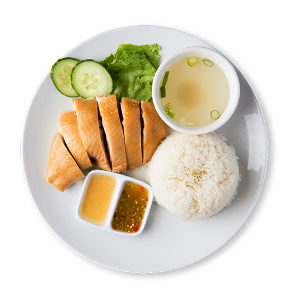
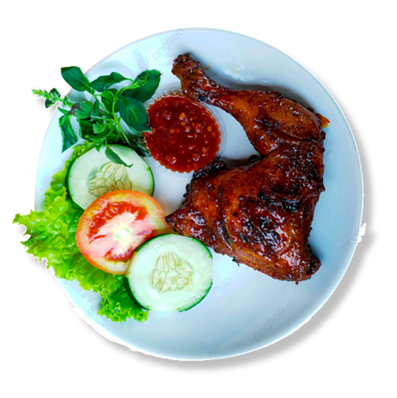
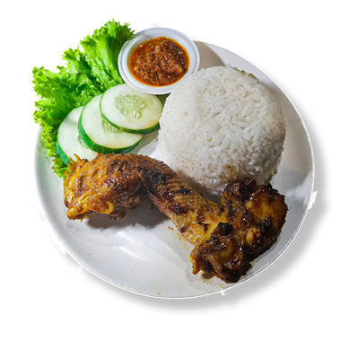
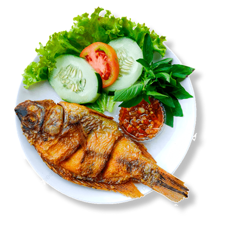
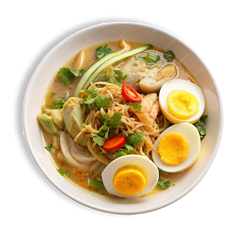

Mencari Hal Menarik?


Temukan tempat makan hidden gem, yang pas dengan dompetmu.
Cepat, hemat, dan banyak pilihan!






Makanan Berat, Nasi, Goreng
1.2km
Makanan Berat, Nasi, Goreng
1.2km
Makanan Berat, Bakmi Ayam
1.8km
Makanan Berat, Mie, Ayam, Kikil
3.1km
Makanan Berat, Mie Ayam
2.4km
Makanan Cepat Saji, Sate, Ayam, Sapi
1.5km
Makanan Berat, Nasi, Goreng
1.3km
Makanan Berat, Nasi, Goreng
1.2km